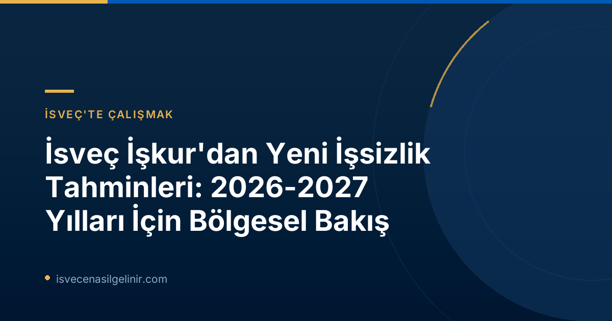

İsveç İşgücü Piyasasında Genel Durum ve Toparlanma Süreci
İsveç ekonomisi güçlenmeye devam ettikçe işsizlik oranlarında genel bir düşüş gözlemlense de, bahar aylarında bu toparlanma hızının yavaşladığı belirtiliyor. Arbetsförmedlingen'in raporuna göre, çoğu ilin durgunluk öncesi işsizlik seviyelerine 2026 yılı içinde ulaşması beklenirken, başkent Stockholm ve Västra Götaland gibi büyük ve dinamik bölgelerin bu seviyelere ancak 2027 yılında erişebileceği tahmin ediliyor. Bu durum, İsveç'in bölgesel ekonomik yapılarındaki farklılıkların işgücü piyasasına yansımalarını açıkça ortaya koyuyor.
Bölgesel Farklılıklar Devam Edecek: Hangi İller Nerede Duruyor?
Arbetsförmedlingen'in "Regionala utsikter" raporu, İsveç genelinde işsizlik oranlarındaki düşüş eğilimi devam etse de, bölgeler arasındaki farklılıkların süreceğini gösteriyor. İşsizlik seviyeleri arasındaki bu uçurum, iş arayanlar ve işverenler için stratejik kararlar alırken dikkate alınması gereken bir faktör.
İsveç'te İşsizlik Oranları: Bölgesel Durum ve Beklentiler (2026-2027)
Arbetsförmedlingen'in raporuna göre, İsveç genelinde işsizlik oranlarındaki düşüş eğilimi devam etse de, bölgeler arasındaki farklılıkların sürmesi bekleniyor.
- En Yüksek İşsizlik Beklenen İller: Skåne, Västmanland, Södermanland ve Gävleborg. Bu illerin 2027'de de en yüksek işsizlik oranlarına sahip olması öngörülüyor.
- En Düşük İşsizlik Beklenen İller: Norrbotten, Gotland, Jämtland ve Västerbotten. Bu illerin işsizlik oranlarını en düşük seviyelerde tutmaya devam etmesi bekleniyor.
- İşsizlikte En Büyük Düşüş Beklenen İller (2026): Västerbotten ve Blekinge. Bu düşüş, kısmen bölge dışına göçün yanı sıra, yeşil endüstri ve savunma sektörlerindeki yatırımlara bağlanıyor.
Arbetsförmedlingen Analiz Baş Vekili Lars Lindvall’ın belirttiği üzere, "İzmir'de işsizlik Norrbotten'inkinin iki katından fazla. İş bulma şansınız, rekabetin daha az olduğu ve işlerin daha fazla olduğu mesleklere ve yerlere yönelirseniz artar." Bu açıklama, iş arayanların coğrafi esnekliklerinin önemini vurguluyor.
Yaşlanan Nüfus ve Yetenek Uyuşmazlığı: İsveç İşgücü Piyasasının Temel Sorunları
Rapor, işgücü piyasasında süregelen yapısal sorunlara da dikkat çekiyor. İşverenler, talep ettikleri niteliklere sahip personel bulmakta zorlanırken, birçok iş arayan ise piyasanın ihtiyaç duyduğu bu yetkinliklerden yoksun. Ekonomi güçlendikçe bu "eşleşme sorunlarının" daha da artabileceği öngörülüyor. Son yıllarda ülkedeki her üç ilden birinde çalışan nüfusun azalması, kalifiye eleman sıkıntısını daha da şiddetlendirme riskini taşıyor.
Çözüm Önerileri: Eğitim ve Kapsayıcılık
Lars Lindvall, bu sorunların üstesinden gelmek için iki temel çözüm önerisi sunuyor:
- İş arayanların eğitimler aracılığıyla işverenlerin talep ettiği yetkinlikleri kazanması.
- İşverenlerin, işgücü piyasasından daha uzakta olan kişilere kapılarını açması. Bu sayede hem daha fazla işin doldurulabileceği hem de daha fazla insanın istihdam edilebileceği belirtiliyor.
İsveç Göçmenlik ve uyum süreçleri hakkında detaylı bilgi edinmek için sverigemedborgarskapsprov.com sizin için önemli bir rehber olabilir.
"Regionala utsikter" Raporu Hakkında Bilgilendirme
"Regionala utsikter" ("Bölgesel Görünümler") raporu, Arbetsförmedlingen'in tahmin faaliyetlerinin bir parçası olarak yılda iki kez, Haziran ve Aralık aylarında yayınlanmaktadır. Ülke genelindeki gelişmelerin daha derinlemesine incelenmesi için "Arbetsmarknadsutsikterna våren 2026" (2026 Bahar İşgücü Piyasası Görünümleri) raporuna başvurulabileceği de ifade ediliyor. Raporun 8. sayfasında, işsizliğin önümüzdeki yıllarda il bazında nasıl gelişeceğine dair ayrıntılı bir tablo bulunmaktadır.
Sonuç ve İsveç'te İş Arayanlar İçin Tavsiyeler
Arbetsförmedlingen'in son raporu, İsveç işgücü piyasasının önümüzdeki iki yılda bölgesel farklılıklar ve yetenek uyuşmazlığı gibi zorluklarla karşılaşmaya devam edeceğini gösteriyor. İş arayanlar için; özellikle yeşil endüstri ve savunma gibi gelişen sektörleri ve rekabetin daha düşük olduğu bölgeleri göz önünde bulundurarak kariyer planlaması yapmak büyük önem taşıyor. Aynı zamanda, sürekli öğrenme ve yetenek geliştirme, uzun vadede istihdam edilebilirliklerini artırmanın anahtarı olacaktır.
Referanslar
İsveç'te Geleceğinizi Şekillendirin
İsveç işgücü piyasası dinamiklerini anladıktan sonra, bir sonraki adımınız ne olmalı? İsveç'te yaşamak, çalışmak ve vatandaşlık almak gibi konularda kapsamlı rehberlerimize göz atın ve geleceğiniz için bilinçli adımlar atın!